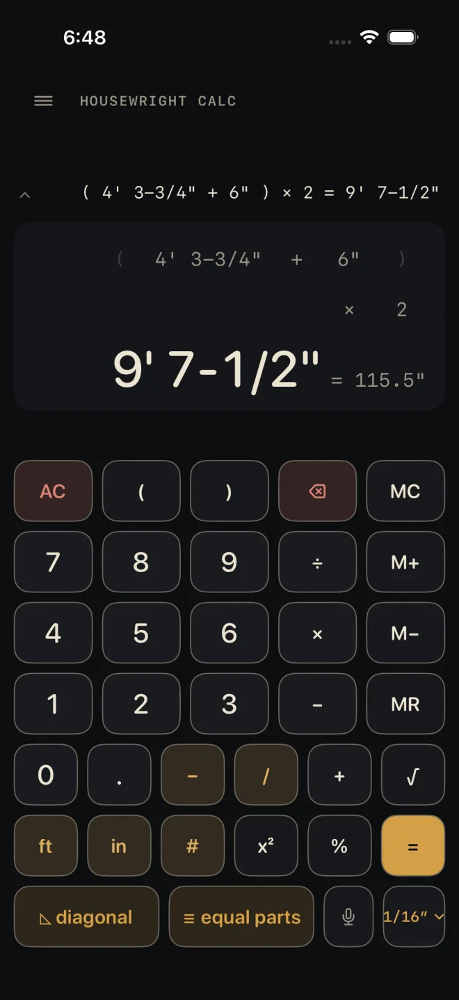

Parentheses and memory
Parentheses let you add things up first and then multiply the lot — two sides of a frame, a run of pieces plus their gaps. Memory keeps a running total off to one side while you work out something else.
Step by step
Two pieces, each 4' 3-3/4" plus a 6" tail:

1 3 4 5- ( — open the group.
- 4 ft 3 – 3 / 4 + 6 in — what goes inside it.
- ) — close the group.
- × then 2. A bare number after × is a count here, so you do not need a unit key.
- =. The display reads 9' 7-1/2".
Without parentheses, × and ÷ are worked before + and −, the same as on paper. Groups can sit inside groups. Every ( needs its ) before =, or the red line reads can't read: unbalanced parenthesis.
× and ÷: lengths and plain numbers
The calculator keeps track of what each number is, and the answer follows from that.
- A length × or ÷ a plain number is a length. 12' 6" ÷ 4 is 3' 1-1/2".
- A length × a length is an area. The answer is shown in ft². An area × a length is a volume, shown in yd³.
- A length ÷ a length is a plain number — how many times one goes into the other.
- A plain number ÷ a length is refused, and so is adding a plain number to a length. The red line tells you which, and for the second one to put ft or in on the number.
How a number with no unit key is read:
- After × or ÷, once the sum has a number with a unit or a fraction in it, a bare number is a count. That covers a whole group after × or ÷ too: 12' ÷ (3 + 1) divides into four.
- A bare number in front of × becomes a count when a length follows it: 3 × 4' is three four-foot boards, and the answer is a length.
- Everywhere else a bare number is inches. So 5 × 5 with no unit keys at all is inches times inches — an area.
- The # key settles it: digits then # is a plain number wherever it sits.
%, √ and x²
- % after + or − takes that percentage of what came before: 1 0 0 # + 10 % = is 110 (without the # the 100 is inches, and the answer reads 9' 2"), and a length − 20 % = is that length less a fifth. After × or ÷ it is the plain factor: 8' × 50 % = is 4'. The number in front of % must be plain — no unit key.
- √ takes the root of the number showing. A plain number gives a plain number: 144 √ is 12. An area gives a length. A length is refused: √ needs a plain number or an area.
- x² multiplies the number showing by itself. A length squared is an area.
For a rise-and-run diagonal you do not need √ at all — use the diagonal key.
Memory
- M+ adds the number showing to memory. The first time, it stores it.
- M− subtracts the number showing from memory.
- MR brings the memory back as your current number. If memory is empty the red line says so and whatever you were typing is left alone.
- MC empties the memory.
A gold M at the left of the display means memory is holding something. AC does not clear it; only MC does. Memory adds like to like — lengths to a length, areas to an area. Mixing them is refused the same way + is.
Common mistakes
- Multiplying two lengths when you wanted one length twice. 4' × 2' is an area in ft², not a length. Leave the unit key off the 2, or press # after it.
- Putting a unit on a percentage. 10 in % is refused; type 10 %.
- Pressing M+ straight after an operator. There is no number to store yet — finish the entry or press = first.
- Expecting to retype a parenthesis. Parentheses cannot be tapped in the line above the answer. Use ⌫ to take off an open one you have just typed, or AC.